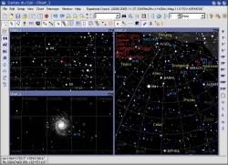
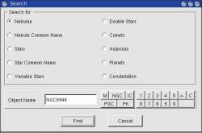
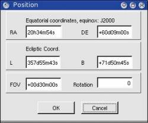
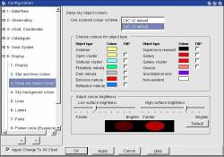
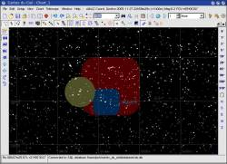
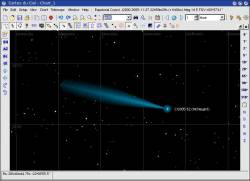
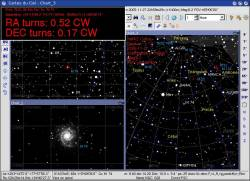
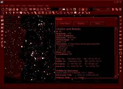

 When the “Link all chart” button is selected the multiple chart you can display on the screen always show the same object at the same time.
Each chart can be configured for its own. You can change every option individually as the projection, field of vision, color, …. If you use the configuration panel don't miss to remove the “apply to all chart” check box in this case.
Every time you select a new location on one of the chart the other are updated to show this location.
The nearby “anchor” button lock the chart centered on the selected object. You can now lock on any object you want.
Even the telescope interface use this button to select if you want the chart centered on the telescope position. Release this button after connecting the telescope to let you move the chart at another location.
 The search dialog give more options and permit to search for a limited range of object type.
It can be more precise than the quick search when the same name can refer to different kind of object.
 The position dialog show the current position of the chart. You can change the values to position the chart at a specific location.
It can use the equatorial coordinates or the coordinates of the chart (alt/az, ecliptic, galactic).
A zoom dialog to select the field of vision with a cursor is also avalable.
 This new configuration panel let you configure with more detail the color to use for each kind of deep sky object.
The “Fill” check box permit to fill some object when using the line drawing mode.
This result in a more readable chart in area of mixed nebula and cluster.
But you are free to return to the old default or set all to gray if you prefer.
 The drawing of the comet as been changed. Just a cosmetic improvement.
 Telescope Interface
The manual telescope mode give you the require information to manually move your telescope from a first object, usually a bright star, to a second one, the faint deep sky object you want to observe.
When you press the Connect Telescope button the panel show the number of knob turn to do on each axis.
The same information is also show in the detailed information panel. It work for equatorial or alt/az mount.
In the Telescope setting you give the number of knob turn by degree or RA hour for your mount. I let you experiment with the Revert check box to achieve the correct Clock-Wise or Counter-Clock-Wise direction as this depend on the side you mount the knob and how you prefer to look at them. Don't forget to revert when you perform a german equatorial flip.
If your mount is motorized you can set “seconds to press the handpad button” instead of “knob turn” the same way.
The INDI telescope interface is working again. A bug prevent to show the telescope position in the last version.
The current version of the drivers is present in the plugins directory. Remove them if you want to run another version of INDI or start the indiserver before Cartes du Ciel.
Look at http://indi.sourceforge.net/ for more details about INDI.
When you select INDI as the telescope type a new submenu “Control Panel” apear in the Telescope menu.
This is to launch the Device Control Device application to control all the aspect of your INDI device.
Look at http://pygtkindiclient.sourceforge.net/ to learn more and to install this application.
You need to configure the path where you install DCD in the system/telescope setting panel.
 Night Vision
The Night Vision mode is back. All the button images are also change for a better integration.
You can also select this button images independently of the night viision mode if they are better suited for your default theme.
In Windows version the FullScreen option eliminate the bright window border.
Use your window manager setting to change any other option a polite application will not risk to touch.
Other change :
With Xplanet 1.2.0 the patch is no longer necessary. Please upgrade to this version.
{kind=link}
{kind=link}
{kind=link}
{kind=link}
{kind=link}
{kind=link}
{kind=link}
{kind=link}